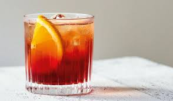

The Negroni Sbagliato is a lighter, sparkling twist on the classic Negroni. Instead of gin, it uses prosecco, combined with sweet vermouth and Campari. This substitution gives the cocktail a bubbly, slightly less bitter profile while retaining the Negroni's signature vibrant, bittersweet flavor. It's typically served over ice and garnished with an orange slice. The name "sbagliato" means "mistaken" in Italian, as it was reportedly created by accident when prosecco was used instead of gin.
- Campari 1oz
- Sweet vermouth 1oz
- Prosecco 1oz
- Garnish with an orange twist
- Fill a glass with ice
- Pour the Campari
- Top with Prosecco
- Stir gently
- Garnish and serve